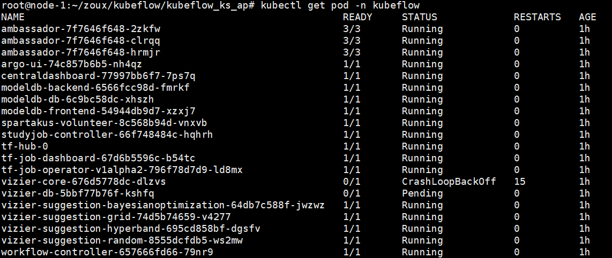

kubeflow国内环境安装
最近一直在想在自己集群上搭建Kubeflow环境，兜兜转转最终终于装好了。这个过程中遇到了很多坑，而在整个过程中发现网上关于如何在国内环境下安装kubeflow的教程非常少。故在此记录我的搭建过程，希望能对想搭建kubeflow环境的小伙伴们一些帮助。这里特意感谢实验室董师兄的指定，告诉我如何修改指定的镜像。
环境介绍：
ubuntu 16.04的机器4台：
1台master
3台node
k8s版本：v1.8.7
ksonnet:0.1.3
kubeflow版本：v0.3.2
安装前准备
参考之前的四篇文章
kubeflow准备–NFS环境搭建
kubeflow准备–下载ks
kubeflow准备–下载ks
kubeflow准备–拉取镜像
开始安装kubeflow
安装思想
由于Kubeflow安装过程中使用的都是gcr.io的镜像，这是google服务器的镜像，国内由于被墙的原因访问不了。所以这里采取的思想是修改kubeflow的后端配置，让安装过程中不使用gcr的镜像，而是使用我们自己指定的镜像。接下来是具体安装过程。
安装准备
提前建立自己的本地仓库 ，这里我的本地仓库是192.168.14.99:5000
将需要的镜像pull下来, 然后tag成本地仓库的镜像，然后上传到本地仓库。
可能存在的问题： Q:怎样知道该版本的kubeflow需要哪些镜像呢？
A:我是先在一个k8s集群上使用官网的教程，安装kubeflow。很明显这样不会成功，但在kubectl get pod -n kubeflow时，发现很多pod都是没启动成功。使用describe命令一个一个查看后，就能找到所需要的镜像。记录下来，然后在dockerhub上搜，是否有人上传了这些镜像。
如果有人使用的是kubeflow v0.3.2版本的话，可以直接使用该脚本下载我上传的镜像。
#!/bin/bash
images=(katib-frontend:v0.1.2-alpha-45-g3dce496 \
spartakus-amd64:v1.0.0 \
jupyterhub-k8s:v20180531-3bb991b1 \
tf_operator:v0.3.0 \
vizier-core:v0.1.2-alpha-45-g3dce496 \
suggestion-bayesianoptimization:v0.1.2-alpha-45-g3dce496 \
suggestion-grid:v0.1.2-alpha-45-g3dce496 \
suggestion-hyperband:v0.1.2-alpha-45-g3dce496 \
suggestion-random:v0.1.2-alpha-45-g3dce496 \
modeldb-backend:v0.2.0 \
centraldashboard:v0.3.0
)
for imageName in ${images[@]} ; do
docker pull zoux/$imageName
done
查看仓库中镜像是否都下载完毕
curl -X GET http://192.168.14.99:5000/v2/_catalog
开始安装kubeflow
https://v0-3.kubeflow.org/docs/started/getting-started/
参考kubeflow的官网安装开始安装：
下面是我的安装命令，这里大家根据自己情况定义好路径名即可：
export KUBEFLOW_SRC=~/zoux/kubeflow
mkdir ${KUBEFLOW_SRC}
cd ${KUBEFLOW_SRC}
export KUBEFLOW_TAG=v0.3.2
curl https://raw.githubusercontent.com/kubeflow/kubeflow/${KUBEFLOW_TAG}/scripts/download.sh | bash
export KFAPP=~/zoux/kubeflow/kubeflow_ks_ap
${KUBEFLOW_SRC}/scripts/kfctl.sh init ${KFAPP} --platform none
cd ${KFAPP}
${KUBEFLOW_SRC}/scripts/kfctl.sh generate k8s
到这里大家是不是发现我们最后一条apply命令还没执行，这里先打住。大家记不记得我们还没有替换kubeflow使用的镜像，现在就是时候了。在KFAPP路径下有俩个文件env.sh和ks_app文件夹。进入ks_app文件夹，我们可以看到有下面的文件：

将这些文件中，出现的gcr.io镜像都换成自己本地的镜像。这里文件很多，我实验发现只需要修改
components/params.libsonnet
vendor/kubeflow/core/spartakus.libsonnet
俩个文件即可。只有这俩个文件中使用了定义了这些镜像。
PS：可以使用grep -r 查找出现该镜像的文件（师兄告知）
本人修改的params.libsonnet文件（供参考）： https://github.com/zoux86/kubeflow/blob/master/params.libsonnet
修改完之后，执行最后一条命令：
${KUBEFLOW_SRC}/scripts/kfctl.sh apply k8s
这里kubeflow已经安装完成了。
验证是否安装成功
kubectl get deployment -n kubeflow
PS
如果显示是这样：

原因是kubeflow的数据库vizier-db（其实就是mysql）需要使用持久化存储。它在安装的时候，声明的PVC，所以我们还需要创建对应的PV。这里我们就可以使用：存储系统-基于NFS的PV服务。
NFS的搭建
见之前的文章
pv的创建
创建一个vizier-pv.yaml的文件，编辑下面的内容：
apiVersion: v1
kind: PersistentVolume
metadata:
name: vizier-pv
spec:
capacity:
storage: 20Gi
accessModes:
- ReadWriteOnce
nfs:
server: 192.168.14.99
path: /nfs-data/kubeflow-pv1
然后创建。 kubectl create -f nfs-pv.yaml
注意：/nfs-data/kubeflow-pv1 是共享的路径，一定要实现创建好，并且在 /etc/exports文件 中有记录。